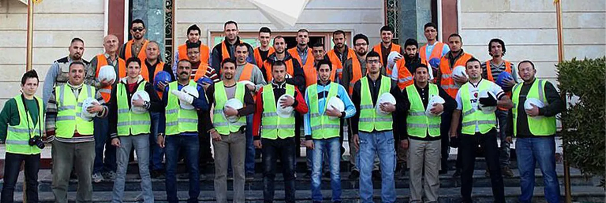

من نحن
منظمة تطوعية مستقلة تعمل لبناء مجتمع أكثر تماسكًا وعدالة.
قصتنا
منظمة بناة العراق منظمة تطوعية غير حكومية، مستقلة ولا تنتمي إلى أي جهة سياسية أو دينية. تأسست عام 2013 كمبادرة شبابية تطوعية، ثم جرى تسجيلها رسميًا كمنظمة مجتمع مدني، انطلاقًا من إيمانها بدور العمل الإنساني والتنموي في بناء مجتمع أكثر تماسكًا وعدالة.

ماذا نفعل
تهدف المنظمة إلى دعم الأسر المحتاجة في العراق من خلال مشاريع إنسانية وتنموية متنوعة، تشمل ترميم المنازل المتضررة، وتوزيع المساعدات الغذائية، ورعاية الأيتام، بما يسهم في تحسين الظروف المعيشية للعائلات المتعففة في مختلف المحافظات العراقية.
كما تعمل على تعزيز ثقافة التطوع وروح التعاون بين الشباب العراقي، وتمكينهم من أداء دور فاعل في خدمة مجتمعهم.
نحو التنمية المستدامة
أطلقت المنظمة مشروع «خطوة»، وهو مشروع يركز على تمكين الشباب والباحثين عن العمل عبر تطوير مهاراتهم المهنية ودمجهم في سوق العمل.
- 2013
انطلاق المبادرة كفريق شبابي تطوعي. - التسجيل الرسمي
تسجيل المنظمة كمنظمة مجتمع مدني. - اليوم
أنشطة متعددة تصل إلى عائلات في مختلف المحافظات، ومشروع «خطوة» لتمكين الشباب.
نؤمن أن الثقة تُبنى بالوضوح
نخصص هذا القسم لنشر وثائق المنظمة وتقاريرها ليطّلع عليها الداعمون والشركاء.